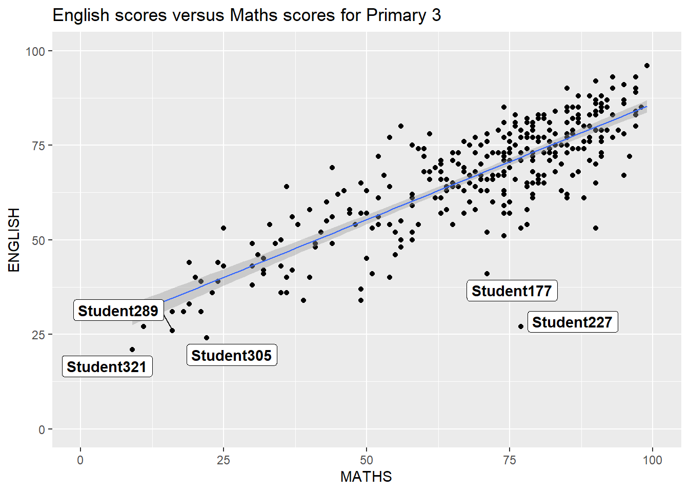
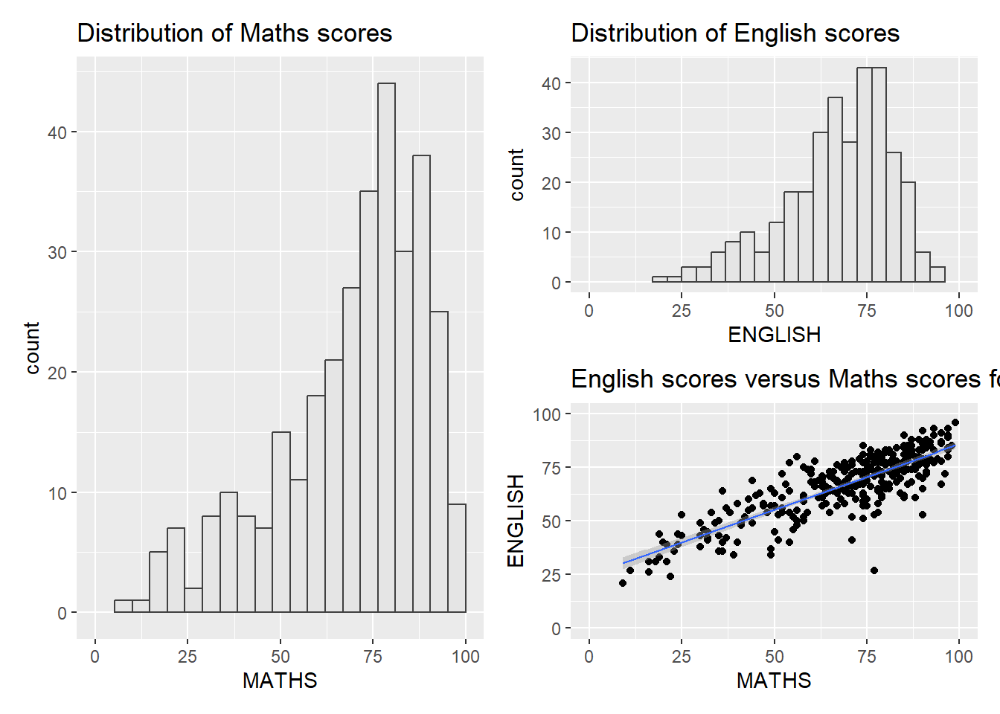
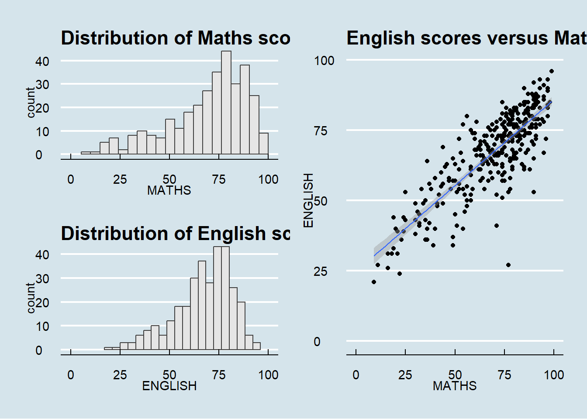

pacman::p_load(tidyverse, patchwork, ggthemes, hrbrthemes, ggrepel)Hands-on Exercise 2: Creating Elegent Graphics with ggplot2
Getting Started
Installing and loading required libraries
Before we get started, it is important for us to ensure that the required R packages have been installed. If yes, we will load the R packages. If they have yet to be installed, we will install the R packages and load them onto the R environment.
The chunk of code below will install and load the required libraries for this hands-on exercise.
Importing Data
The code chunk below imports exam_data.csv into the R environment using read_csv() function of readr package.
exam_data <- read_csv("data/Exam_data.csv")Rows: 322 Columns: 7
── Column specification ────────────────────────────────────────────────────────
Delimiter: ","
chr (4): ID, CLASS, GENDER, RACE
dbl (3): ENGLISH, MATHS, SCIENCE
ℹ Use `spec()` to retrieve the full column specification for this data.
ℹ Specify the column types or set `show_col_types = FALSE` to quiet this message.There are a total of seven attributes, four of them are of categorical data type while the others are of continuous data type.
Categorical attributes are: ID, CLASS, GENDER and RACE
Continuous attributes are MATHS, ENGLISH and SCIENCE
Beyong ggplot2 Annotation
One of the challenges in plotting statistical graphs is annotation, especially with a large number of data points.
Working with ggrepel
ggrepel is an extension of ggplot2 package which provides geoms for ggplot2 to repel overlapping text. We simply replace geom_text() with geom_text_repel() and geom_label() with geom_label_repel().
ggplot(data = exam_data,
aes(x = MATHS,
y = ENGLISH)) +
geom_point() +
geom_smooth(method = lm,
size = 0.5) +
geom_label_repel(aes(label = ID),
fontface = "bold") +
coord_cartesian(xlim = c(0, 100),
ylim = c(0, 100)) +
ggtitle("English scores versus Maths scores for Primary 3")Warning: Using `size` aesthetic for lines was deprecated in ggplot2 3.4.0.
ℹ Please use `linewidth` instead.`geom_smooth()` using formula = 'y ~ x'Warning: ggrepel: 317 unlabeled data points (too many overlaps). Consider
increasing max.overlaps
Beyond ggplot2 Themes
ggplot2 comes with eight built-in themes. They are
theme_gray()
theme_bw()
theme_classic()
theme_dark()
theme_light()
theme_linedraw()
theme_minimal()
theme_void()
ggplot(data = exam_data,
aes(x = MATHS)) +
geom_histogram(bins = 20,
boundary = 100,
color = "grey25",
fill = "grey90") +
theme_gray() +
ggtitle("Distribution of Maths scores")
Working with ggtheme package
ggthemes provides ggplot2 themes with the ability to replicate the look of plots. It also provides extra geoms and scales for ggplot2.
ggplot(data = exam_data,
aes(x = MATHS)) +
geom_histogram(bins = 20,
boundary = 100,
color = "grey25",
fill = "grey90") +
ggtitle("Distribution of Maths scores") +
theme_economist()
Working with hrbrthemes package
hrbrthemes package provides a basic theme that focuses on typographic elements, including where various labels are placed as well as the fonts that are used.
ggplot(data = exam_data,
aes(x = MATHS)) +
geom_histogram(bins = 20,
boundary = 100,
color = "grey25",
fill = "grey90") +
ggtitle("Distribution of Maths scores") +
theme_ipsum()Warning in grid.Call(C_stringMetric, as.graphicsAnnot(x$label)): font family
not found in Windows font database
Warning in grid.Call(C_stringMetric, as.graphicsAnnot(x$label)): font family
not found in Windows font database
Warning in grid.Call(C_stringMetric, as.graphicsAnnot(x$label)): font family
not found in Windows font databaseWarning in grid.Call(C_textBounds, as.graphicsAnnot(x$label), x$x, x$y, : font
family not found in Windows font database
Warning in grid.Call(C_textBounds, as.graphicsAnnot(x$label), x$x, x$y, : font
family not found in Windows font database
Warning in grid.Call(C_textBounds, as.graphicsAnnot(x$label), x$x, x$y, : font
family not found in Windows font database
Warning in grid.Call(C_textBounds, as.graphicsAnnot(x$label), x$x, x$y, : font
family not found in Windows font database
Warning in grid.Call(C_textBounds, as.graphicsAnnot(x$label), x$x, x$y, : font
family not found in Windows font database
Warning in grid.Call(C_textBounds, as.graphicsAnnot(x$label), x$x, x$y, : font
family not found in Windows font database
Warning in grid.Call(C_textBounds, as.graphicsAnnot(x$label), x$x, x$y, : font
family not found in Windows font database
Warning in grid.Call(C_textBounds, as.graphicsAnnot(x$label), x$x, x$y, : font
family not found in Windows font database
Warning in grid.Call(C_textBounds, as.graphicsAnnot(x$label), x$x, x$y, : font
family not found in Windows font database
Warning in grid.Call(C_textBounds, as.graphicsAnnot(x$label), x$x, x$y, : font
family not found in Windows font databaseWarning in grid.Call.graphics(C_text, as.graphicsAnnot(x$label), x$x, x$y, :
font family not found in Windows font databaseWarning in grid.Call(C_textBounds, as.graphicsAnnot(x$label), x$x, x$y, : font
family not found in Windows font database
axis_title_size argument is used to increase the font size of the axis title
base_size argument is used to increase the default axis label to 15
grid argument is used to remove the x-axis grid lines
ggplot(data = exam_data,
aes(x = MATHS)) +
geom_histogram(bins = 20,
boundary = 100,
color = "grey25",
fill = "grey90") +
ggtitle("Distribution of Maths scores") +
theme_ipsum()Warning in grid.Call(C_textBounds, as.graphicsAnnot(x$label), x$x, x$y, : font
family not found in Windows font database
Warning in grid.Call(C_textBounds, as.graphicsAnnot(x$label), x$x, x$y, : font
family not found in Windows font database
Warning in grid.Call(C_textBounds, as.graphicsAnnot(x$label), x$x, x$y, : font
family not found in Windows font database
Warning in grid.Call(C_textBounds, as.graphicsAnnot(x$label), x$x, x$y, : font
family not found in Windows font database
Warning in grid.Call(C_textBounds, as.graphicsAnnot(x$label), x$x, x$y, : font
family not found in Windows font database
Warning in grid.Call(C_textBounds, as.graphicsAnnot(x$label), x$x, x$y, : font
family not found in Windows font database
Warning in grid.Call(C_textBounds, as.graphicsAnnot(x$label), x$x, x$y, : font
family not found in Windows font database
Warning in grid.Call(C_textBounds, as.graphicsAnnot(x$label), x$x, x$y, : font
family not found in Windows font database
Warning in grid.Call(C_textBounds, as.graphicsAnnot(x$label), x$x, x$y, : font
family not found in Windows font database
Warning in grid.Call(C_textBounds, as.graphicsAnnot(x$label), x$x, x$y, : font
family not found in Windows font databaseWarning in grid.Call.graphics(C_text, as.graphicsAnnot(x$label), x$x, x$y, :
font family not found in Windows font databaseWarning in grid.Call(C_textBounds, as.graphicsAnnot(x$label), x$x, x$y, : font
family not found in Windows font database
Beyond ggplot2 facet
In this section, we will be creating composite plots by combining multiple graphs. First, let’s create three statistical graphs.
p1 <- ggplot(data = exam_data,
aes(x = MATHS)) +
geom_histogram(bins = 20,
boundary = 100,
color = "grey25",
fill = "grey90") +
coord_cartesian(xlim = c(0,100)) +
ggtitle("Distribution of Maths scores")
p2 <- ggplot(data = exam_data,
aes(x = ENGLISH)) +
geom_histogram(bins = 20,
boundary = 100,
color = "grey25",
fill = "grey90") +
coord_cartesian(xlim = c(0,100)) +
ggtitle("Distribution of English scores")
p3 <- ggplot(data = exam_data,
aes(x = MATHS,
y =ENGLISH)) +
geom_point() +
geom_smooth(method = lm,
size = 0.5) +
coord_cartesian(xlim = c(0,100),
ylim = c(0,100)) +
ggtitle("English scores versus Maths scores for Primary 3")Creating Composite Graphics: patchwork methods
Sometimes, multiple graphs are required to tell a compelling visual story. There are several ggplot2 extensions that provide functions to compose figures with multiple graphs.
Patchwork package has a very simple syntax where we can create layouts super easily. The general syntax combines a two-column layout using the plus sign, a parenthesis to create a subplot group and a two row layout using the division sign.
Try this:
p1 + p2 / p3`geom_smooth()` using formula = 'y ~ x'
‘|’ will place the plots beside each other while ‘/’ will stack them:
(p1 / p2) | p3`geom_smooth()` using formula = 'y ~ x'
Patchwork also provides auto-tagging capabilities which aim to identify subplots in text:
((p1 / p2) | p3) +
plot_annotation(tag_levels = 'I')`geom_smooth()` using formula = 'y ~ x'
To add themes:
patchwork <- (p1 / p2) | p3
patchwork & theme_economist()`geom_smooth()` using formula = 'y ~ x'
Besides providing functions to place plots next to each other based on the provided layout, patchwork also allows us to place one or several plots of graphic elements freely on top or below another plot.
p3 + inset_element(p2,
left = 0.02,
bottom = 0.7,
right = 0.5,
top = 1)`geom_smooth()` using formula = 'y ~ x'